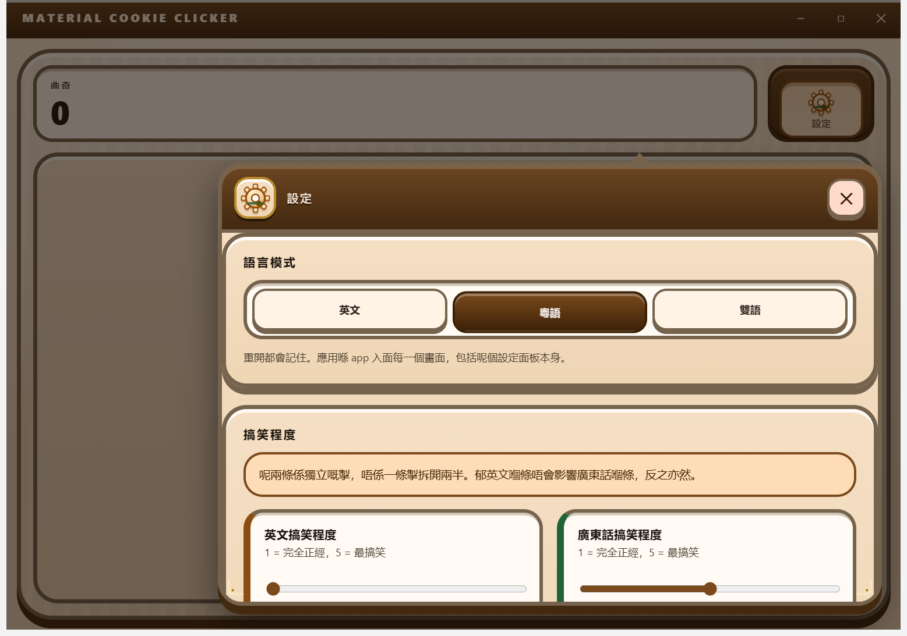

Bilingual text and the funny-level sliders
English and Hong Kong Cantonese side by side, with two independent 1–5 humour sliders — one per language.
Partly shipped every shipped surface is bilingual, and the Settings panel now ships with a working language-mode selector; the two funny-level sliders are on screen and stored, but no copy has per-level variants yet.
From the running application
![The full game surface on a progressed save. Three HUD plates run across the top reading COOKIES 3.926 billion, PER SECOND 181.7 thousand and PER CLICK 2.04, each labelled in English and Cantonese, and four console emblem buttons sit at the top right: ACHIEVEMENTS, TOOLS, STATISTICS and PRESTIGE. The cookie hero fills the left panel, with the lines 181.7 thousand per second and hold to click repeatedly under it. Below that the UPGRADES strip reads 6 / 79 and shows ticket cards for Shop Sign, Upgrade Catalogue, Steady Hand, Fuel Contract, Reinforced Finger and Sturdier Ovens, all marked already owned, then Double Click Double Trouble priced at 1 million. The SHOP rail on the right lists Cursor with 10 owned and Grandma with 1, and the Diesel Depot is docked underneath it as the rail footer, showing 0 litres minted, 36 vouchers minted, a line saying WinForge has not read the ledger yet, and a Mint 1 L button priced at 1 thousand cookies.](../assets/captures/game-progressed.png)
See all nine captures in the capture matrix.
What it does
Material Cookie Clicker is bilingual in English and Hong Kong Cantonese, and the Cantonese is not a translation pass bolted on afterwards. Every generator, upgrade, achievement and tool definition carries both names as first-class data, and the tool jokes are written twice rather than translated once — a Bank earns its loan-shark nickname, a Temple earns Wong Tai Sin's “everything granted, nothing free”.
Click a cookie. Buy twenty tiers of increasingly unreasonable machinery. Spend a hundred and eighty upgrades, chase two hundred and one achievements, unlock the application's own features as in-game tools, then throw it all away for a permanent multiplier.
撳曲奇。買二十級越嚟越荒謬嘅機器。用一百八十個升級、追二百零一個成就、將個應用程式自己嘅功能解鎖做遊戲道具，然後全部清晒，換返個永久倍數。
The three language modes and the two sliders
design/settings-funny-sliders.html specifies a language-mode selector — English, Cantonese, or both at once — as a segmented cabinet switch, plus two independent 1–5 funny-level sliders, one per language. The two sliders are made visually and functionally distinct on purpose, so it is unmistakable that they are separate controls: setting English to 1 and Cantonese to 5 is a supported, sensible configuration, not a mistake to be helpfully “synced”.
How it is configured
The Settings panel opens from its own gear emblem on the cabinet console. That emblem is not earned: every other console button appears only once the progress it describes exists, but Settings is an application surface rather than a reward, so it is on the cabinet from the first frame of a brand-new save — a player who cannot read English never has to play their way to the language switch.
The language mode and both humour levels are ordinary preferences stored locally, in their own storage key, separate from the game save: wiping a run never resets the language you read the app in. There is no telemetry, no language-detection call, and no network request of any kind involved — the application works with the network unplugged, and so does this site.
![The Settings panel open as an anchored dialog over a dimmed fresh game surface. Its header reads SETTINGS with the Cantonese heading beside it and a close button at the right. A LANGUAGE MODE section holds three segmented buttons, English, Cantonese and Bilingual, with Bilingual pressed and filled brown, above a caption saying the choice persists across restarts and applies to every surface. Below, a FUNNY LEVEL section opens with a highlighted warning that these are two separate controls, not one shared slider split in half, above the tops of two separate slider cards headed English funny level and Cantonese funny level.](../assets/captures/settings-dialog.png)

In the shipped build
The language mode is real and it works: choosing English, Cantonese or Bilingual re-renders the whole application through a single formatting function, so the HUD, the console labels, panel headings, buttons and captions all follow it at once. A handful of accessible names and a few hardcoded headings on the game screens still read as a bilingual pair regardless of the mode; those are named in the repository's handover notes rather than quietly left out.
The two funny-level sliders are on screen, independent, and stored across restarts — and today they change nothing you can read. Every string in this build is written once per language, so there are no per-level variants for a level to select. The panel says exactly that in both languages, immediately under the sliders, rather than implying five voices that do not exist yet.